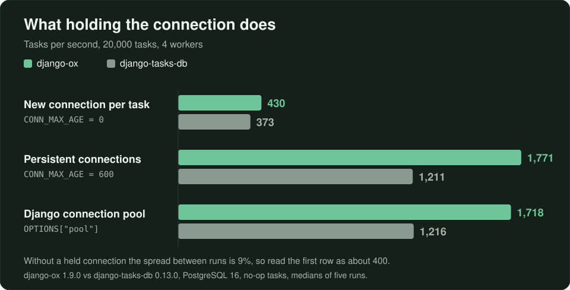
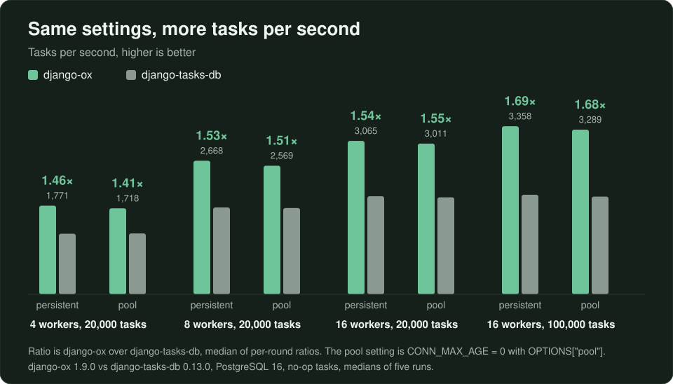

Your workers open a new Postgres connection for every task
With Django's default connection setting, a task worker opens a new PostgreSQL connection for every task. We measured what that costs and what a pool gives back. Then we compared django-ox and django-tasks-db at matched settings.
Picture a Monday backlog: 60,000 tasks queued over the weekend and four workers draining them at about 400 a second. That rate is Django's default connection setting at work. With CONN_MAX_AGE = 0, every task opens a new PostgreSQL connection and closes it when the work is done. In our runs a new connection cost about 5 ms, more than the whole claim-and-run path takes on a warm connection. Hold the connection, and the same four workers did 1,200 to 1,800 tasks a second in our benchmark.
We gave django-ox and django-tasks-db the same database settings and ran the same no-op tasks through both. With a pool or persistent connections, django-ox did 1.4 to 1.7 times the tasks per second. A 100,000-task backlog drained in about 30 seconds on django-ox and about 50 on django-tasks-db.
Connections first
Django's default is CONN_MAX_AGE = 0: close the connection when the work is done. For a task worker, that means one new Postgres connection per task. In our runs without a pool, both backends opened roughly one session per task. With a pool or CONN_MAX_AGE = 600, they opened a few dozen for 100,000 tasks.

So the fair test gives both backends the same connection policy. We tried five.
The setup
- Postgres 16 in Docker on the same host as the workers
- django-ox 1.9.0 and django-tasks-db 0.13.0, Django 6.0.8, psycopg 3.3.6
- No-op tasks with a 256-byte payload, backlog filled before the workers start, then drained
- 4, 8 and 16 worker processes at 20,000 tasks, and 16 processes at 100,000
- Five runs per cell. We report the median.
The two pooled configs, as you'd write them:
# P: persistent connections
DATABASES["default"]["CONN_MAX_AGE"] = 600
# G: Django's psycopg pool
DATABASES["default"]["OPTIONS"] = {"pool": {"min_size": 0, "max_size": 16, "timeout": 30}}
Pick one. Django 6.0 rejects a pool combined with a nonzero CONN_MAX_AGE.
Load average sat between 2 and 7 during the runs, and we kept every run. The spread inside each cell stayed under 3% for most of them.
Results
Tasks per second, higher is better.

| Workers, tasks | Config | django-ox | django-tasks-db | Ratio |
|---|---|---|---|---|
| 4, 20,000 | P | 1,771 | 1,211 | 1.46 |
| 4, 20,000 | G | 1,718 | 1,216 | 1.41 |
| 8, 20,000 | P | 2,668 | 1,735 | 1.53 |
| 8, 20,000 | G | 2,569 | 1,724 | 1.51 |
| 16, 20,000 | P | 3,065 | 1,959 | 1.54 |
| 16, 20,000 | G | 3,011 | 1,938 | 1.55 |
| 16, 100,000 | P | 3,358 | 1,989 | 1.69 |
| 16, 100,000 | G | 3,289 | 1,952 | 1.68 |
Worker CPU per task was 1.0 to 1.4 ms for django-ox and 1.5 to 2.1 ms for django-tasks-db. Our best explanation is the claim path, where django-ox runs two statements per task. We measured CPU on both sides and statement counts on ours only.
Two other results from the same run:
- Health checks cost 7 to 10% at four workers.
CONN_HEALTH_CHECKS = Truetook django-ox from 1,771 to 1,590 and django-tasks-db from 1,211 to 1,123. Turn them on if your network drops idle connections. Leave them off if it doesn't. - Without a pool, both drop to a few hundred a second, close together. With
CONN_MAX_AGE = 0at four workers, django-ox did 430 tasks per second and django-tasks-db 373, a ratio of 1.16. Past four workers the no-pool runs exhausted the host's ephemeral ports, so that configuration is reported at four workers only. Don't run production that way anyway.
What shrinks the gap
These tasks do nothing. Real tasks spend their time in your code: an API call or a template render. The longer the work, the less the queue matters. At 200 ms a task, the claim path is a rounding error and the two backends will look alike. If your tasks are heavy, pick on features.
Where speed sits
Speed is the second reason to run django-ox. The first is what happens when a worker dies. A django-ox worker holds a lease on each task it runs. When the worker dies, the lease expires and a reaper hands the task to another worker. The default lease is 300 seconds.
We tested that with five trials of 2,000 tasks, each with 20 worker kills and replacements. The versions were django-ox 1.3.0 and django-tasks-db 0.13.0 on PostgreSQL 16. Every django-ox trial finished 2,000 of 2,000 tasks. django-tasks-db left 13 to 19 tasks per trial stuck in RUNNING. Execution is at-least-once: the trials recorded 7 repeated effects across 10,000 tasks, so write tasks that are safe to run again.
Enqueueing is transactional as well. Enqueue inside transaction.atomic() on the database holding the task table, and the task commits or rolls back with your rows. No on_commit() hook needed.
django-tasks-db is the default most Django teams start with, and it's a sound one. Procrastinate and huey are mature choices too. django-ox is for teams that want the queue in the database they already run, with tasks that outlive the worker.
Send us your numbers
If you run something like this on your own hardware and get a different answer, we'd like to see it. The settings above are everything we changed.
If you're on django-tasks-db and it works, keep it. If you want tasks that survive a dead worker and a queue that takes less CPU per task: pip install django-ox. Then give Django a pool or a nonzero CONN_MAX_AGE before you measure anything.